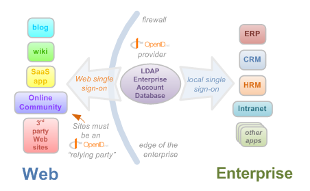

Honza @Novoj Novotný
Client has several high traffic sites and e-shops on different domains. He wanted to consolidate user accounts in a single place and share accounts among them.
AND SO WE DID IT

They're much more suitable for "intranet" usage than for e-shops.

Very good to accept outside identities to create internal accounts in the e-shop. Not much suitable to transfer logged user among the shops (any idea?).
Maybe too simple for "enterprise" solutions?!
Mmm, the problem doesn't sound that difficult. Does it?!
SAML message exchange model for achieving Web SSO looks like this:

1. user visits https://www.fraus.cz
2. page embeds https://account.fraus.cz/user/www.fraus.cz/123abc
3. account server stores into session and DB:
USER NOT LOGGED IN
www.fraus.cz = token 123abc
4. account server returns user is not logged in (public JSON)
5. user logs in on https://www.fraus.cz against shared user DB
6. www.fraus.cz securely sends information to account server about user login
USER novoj LOGGED IN
www.fraus.cz = token 123abc
1. user visits https://www.flexibooks.cz
2. page embeds https://account.fraus.cz/user/www.flexibooks.cz/567def
3. account attaches new token to existing session and DB:
USER novoj LOGGED IN
www.fraus.cz = token 123abc
www.flexibooks.cz = token 567def
4. account server returns novoj is logged in (public JSON)
5. www.flexibooks.cz verifies securely that novoj is logged in for token 567def
6. account server confirms novoj is logged in - it paired both tokens through single session
7. www.flexibooks.cz refreshes page contents and display correct user prices

Honza Novotný, FG Forrest
@novoj
http://blog.novoj.net